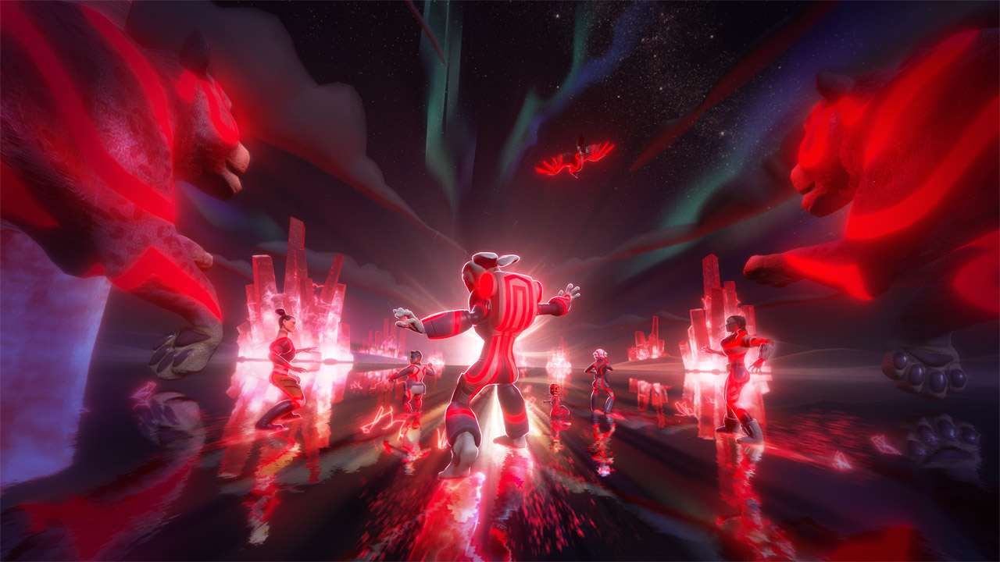
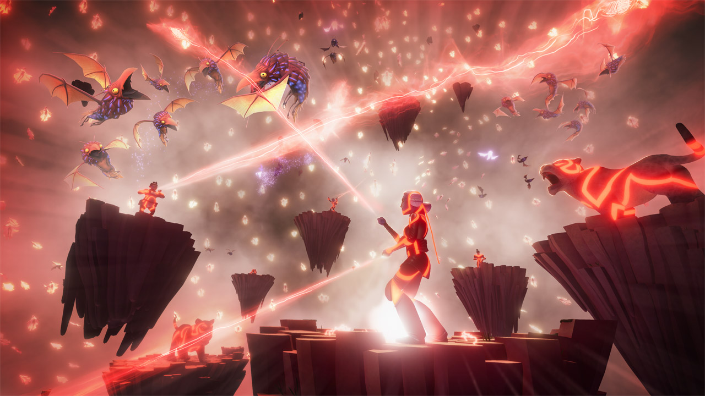
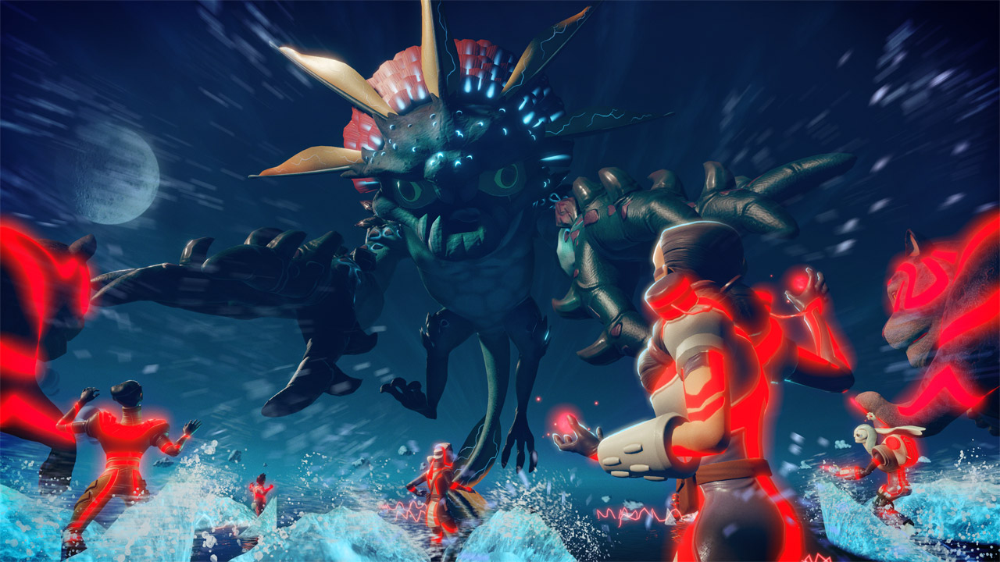
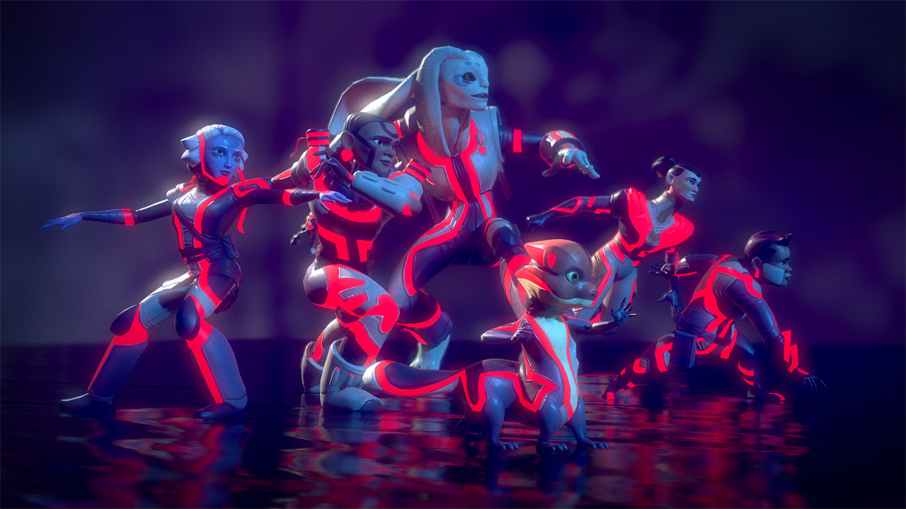
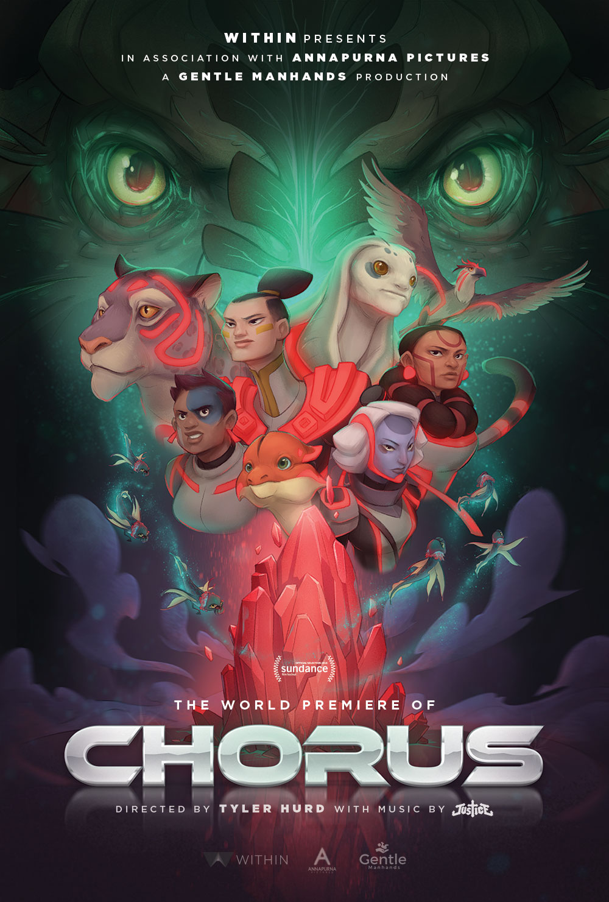

Chorus
Official Selection: Sundance New Frontier 2018
Official Selection: SXSW Virtual Cinema 2018
Winner: Best Playful VR Experience – World VR Forum 2018
Winner: Best Music VR Experience – Raindance Film Festival 2018
Developed many custom shaders to evoke ‘80s sci-fi effects while maintaining high performance. Designed systems to dynamically generate electrical arcs, trailing wakes in water, and to efficiently render and control flocks of flying “spirit” creatures.




